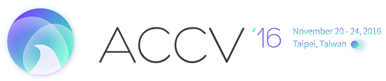

電腦視覺論壇

ACCV 2016將於今年十一月於台北國際會議中心舉辨，八月中在台北舉行議程委員會議，屆時將有近四十位國際知名電腦視覺專家學者造訪台灣，CVGIP將於會議第一天(8/15)在大會場地(基隆長榮桂冠酒店)與ACCV共同舉辦電腦視覺高峰論壇，邀請廿餘位知名電腦視覺學者和與會貴賓分享他們最新的研究成果，內容精彩可期，歡迎報名參加，同時報名CVGIP與該論壇可享折扣，請使用線上註冊報名。詳細會議議程請見以下網站。
http://cv.cs.nthu.edu.tw/php/callforpaper/2016_ACworkshop/
與會講者
Narendra Ahuja (UIUC)
Larry Davis (U. of Maryland)
Sanja Fidler (U. of Toronto)
Mario Fritz (Max Planck Institute for Informatics)
Yasutaka Furukawa (Washington U. in St. Louis)
Hiroshi Ishikawa (Waseda U.)
Iasonas Kokkinos (CentraleSupélec/INRIA)
Kyoung Mu Lee ( Seoul National U.)
Yasuyuki Matsushita (Osaka U.)
Greg Mori (Simon Fraser U.)
Srinivasa Narasimhan (CMU)
Shmuel Peleg (Hebrew U. of Jerusalem)
Ian Reid (U. of Adelaide)
Mathieu Salzmann (EPFL)
Shiguang Shan (Chinese Academy of Sciences)
Min Sun (National Tsing Hua U.)
Raquel Urtasun (U. of Toronto)
Anton van den Hengel (U. of Adelaide)
Xiaogang Wang (Chinese U. of Hong Kong)
Lei Zhang (Hong Kong Poly U.)
Copyright © 2016 National Taiwan University
版權所有 國立台灣大學 資訊工程學系
地址：台北市大安區羅斯福路四段1號
© 2016 National Taiwan University. All Rights Reserved.